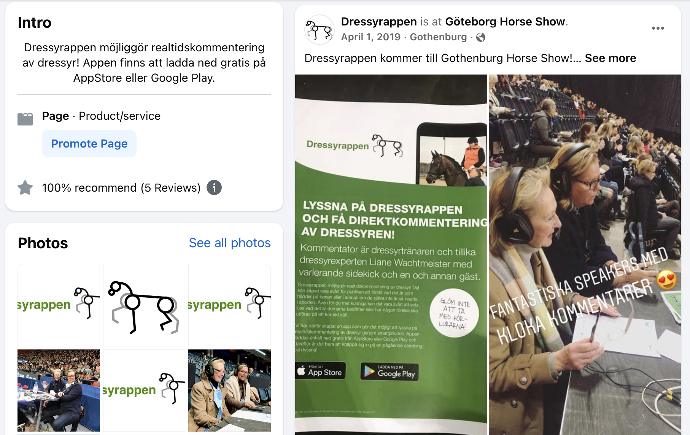
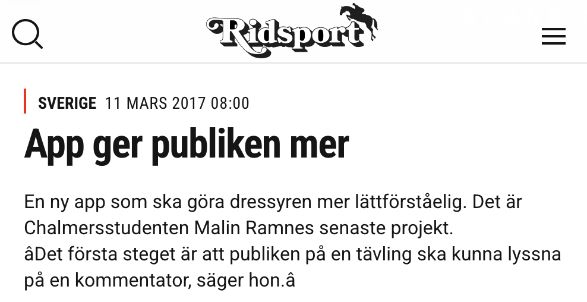
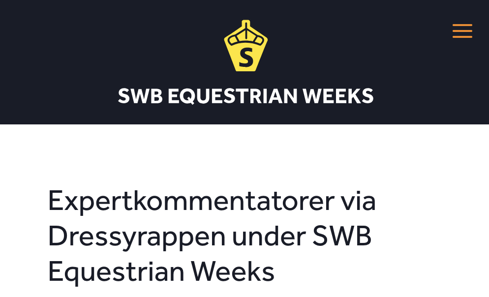

Selected links

Dressyrappen på Facebook
Updates, posts and public-facing presence for the project.

Dressyrappen i Tidningen Ridsport
Press coverage highlighting the app and its development.

Dressyrappen på SWB Equestrian Weeks
An example of the app being used in a major equestrian event context.